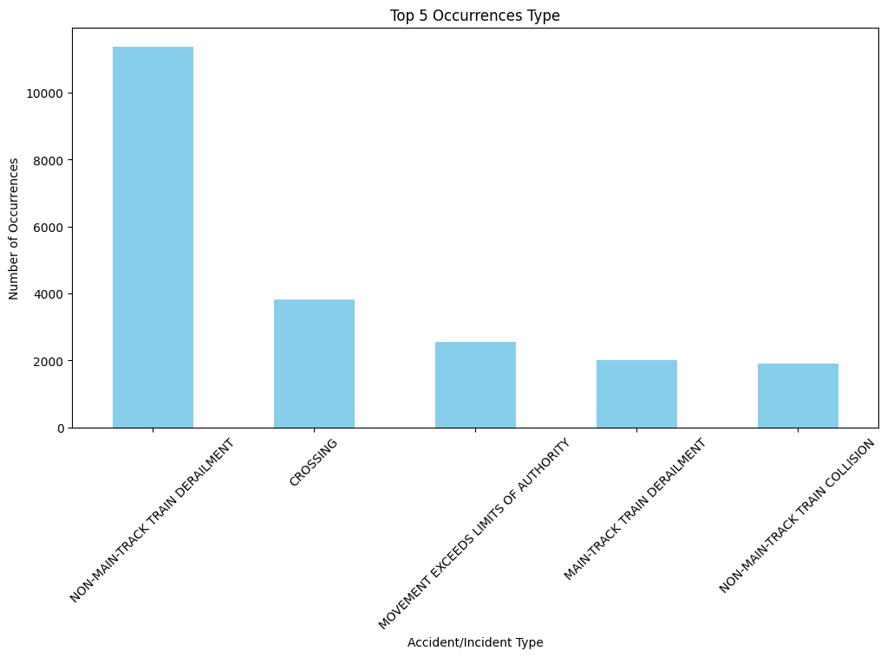
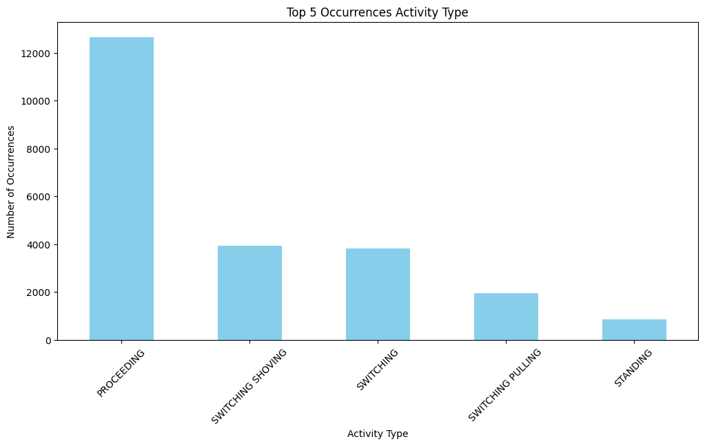

Exploring and Predicting Rail Occurrences in Canada
Overview
This project explores and analyzes over two decades of Canadian rail incident data to identify trends, risk factors, and patterns across provinces and incident types. The goal was to build an interactive dashboard and apply predictive modeling to forecast potential high-risk areas.
Key Highlights
- 📌 Used Python (Pandas, Seaborn) to clean and analyze Transport Canada rail data
- 📊 Built an interactive Tableau dashboard to visualize incident trends by location, cause, and type
- 🧠 Applied Random Forest and XGBoost to classify high-risk zones with accuracy
- 📍 Mapped occurrences using Folium & GeoJSON overlays
Interactive Tableau Dashboard

Python Visualizations

📊 This chart highlights the most frequent types of railway occurrences across Canada, emphasizing derailments and crossings as key safety concerns.

⚙️ Shows the top activities during which incidents occurred, with 'Proceeding' being the most incident-prone operational state.
Interactive Folium Map
Explore clusters of incidents by region across Canada using this interactive marker map.
Tools & Libraries Used
- Python (Pandas, NumPy, Matplotlib, Seaborn)
- Tableau (Interactive dashboard)
- Folium (Geospatial mapping)
- Scikit-learn, XGBoost